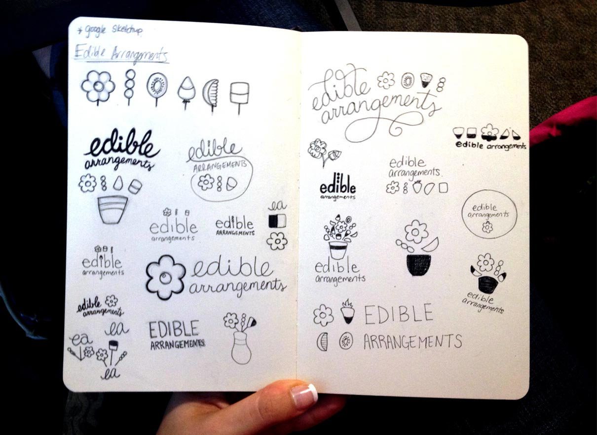
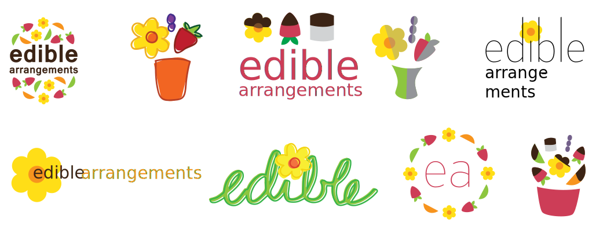
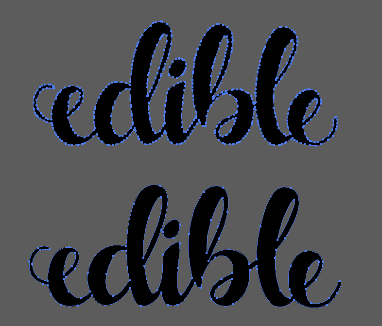
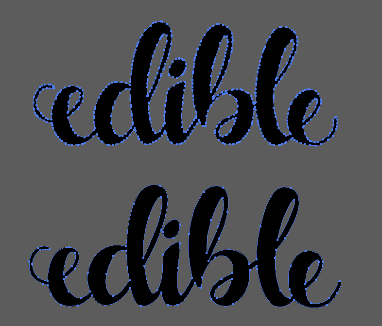

Enforcing Unity
I created an online style guide for the brand, to ensure ease of access and provide a clear guideline for:
- Acceptable Logo Use
- Color Guide
- Typography
- Print & Web Layouts
- Additional Assets & Icons
The edible brand is growing quickly, yet suffering a bit of a dated identity. It’s time to bring the company from its 1999 founding into 2014, where most of its business is online. The company is now well known enough to not need to display its product in its logo, and can focus on streamlining its design, decreasing colors, and making it much more efficient overall for printing and web purposes.
The look and feel I wanted to evoke was: Fun, sweet, and simple. 
“The details are not the details. They make the design.” —Charles Eames
 

I created an online style guide for the brand, to ensure ease of access and provide a clear guideline for:
I added physical and digital items to the brand identity, which radded new patterns, characters, and fruit icons to it. Many of the new assets came from the addition of a mobile app called "Fruit Story," which promotes fruit consumption by teaching kids why fruit is so good for them. The app is narrated by two characters — Mark the Worm and Jeff the Bug —, who fly onto your fruit via phone projections. For more information, see the case study below.
See Fruit Story Case Study